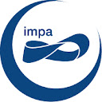
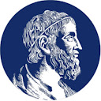
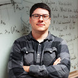
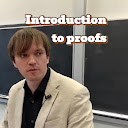
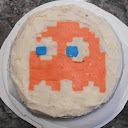

Literatura científica
Onde localizar artigos
MathSciNet reúne referências e resenhas especializadas. zbMATH Open oferece uma base matemática aberta; arXiv reúne preprints, que podem ainda não ter passado por avaliação por pares.
Curiosidades Homeomorfas
Uma seleção comentada de matemática, cultura e acontecimentos que merecem circular.
Entre quadros, formas e ideias.
Curadoria
Ferramentas e acervos para encontrar referências, experimentar ideias e escrever Matemática.
Literatura científica
MathSciNet reúne referências e resenhas especializadas. zbMATH Open oferece uma base matemática aberta; arXiv reúne preprints, que podem ainda não ter passado por avaliação por pares.
Ferramenta matemática
Explore cálculos, gráficos, equações e propriedades de objetos matemáticos. Uma ferramenta de experimentação e conferência que acompanha o estudo das demonstrações.
Abrir Wolfram|Alpha ↗Escrita matemática
LaTeX é um sistema de preparação de documentos especialmente útil para fórmulas,
referências, artigos, listas de exercícios e apresentações. Você escreve um arquivo
.tex e o compila para obter o PDF.
Canais de vídeo · Matemática teórica
Canais institucionais para acompanhar a Matemática em diferentes níveis. Os canais de curiosidades estão reunidos mais abaixo.

Instituto de Matemática Pura e Aplicada Cursos, palestras e divulgação do IMPA.
IME USP Cursos, seminários e palestras do IME-USP.Seleção temática
De fitas de Möbius e poliedros a homotopia, variedades e singularidades. Uma seleção que percorre a divulgação e a pesquisa.
John Morgan apresenta o trabalho de Perelman sobre a conjectura de Poincaré e a geometrização de 3-variedades, em palestra da Clay Research Conference de 2018.
Assistir ao vídeoMarcus du Sautoy explora relações entre a música de Bach e a fita de Möbius, aproximando uma superfície de um só lado da estrutura de uma composição musical.
Assistir ao vídeoFernando Codá propõe um passeio pela Geometria e pela imaginação em uma apresentação do IMPA voltada a estudantes do ensino médio.
Assistir ao vídeoChris Staecker introduz o segundo grupo de homotopia da esfera, π₂(S²), e apresenta sua relação com uma versão da teoria para imagens digitais.
Assistir ao vídeoUma demonstração visual de que o grupo fundamental de uma variedade topológica é enumerável, organizada em torno de caminhos e homotopias.
Assistir ao vídeoVinicius Gripp Barros Ramos apresenta os sólidos platônicos e a característica de Euler, relacionando a geometria dos poliedros a um invariante topológico.
Assistir ao vídeoConstrução da estrutura de variedade na grassmanniana, o espaço que parametriza subespaços de um espaço vetorial, por analogia com o espaço projetivo.
Assistir ao vídeoMinicurso que revisita definições equivalentes de equivalência topológica para germes de funções holomorfas, no estudo de singularidades de hipersuperfícies complexas.
Assistir ao vídeoPalestra de divulgação de Ana Menezes, no 35º Colóquio Brasileiro de Matemática, dedicada a superfícies mínimas e superfícies de curvatura média constante.
Assistir ao vídeoVídeos matemáticos · Entrevistas
Trajetórias, História da Matemática e experiências de quem ensina e pesquisa.
Sergio Roberto Nobre conversa sobre História da Matemática, pensamento crítico e a importância do conhecimento histórico para a educação matemática.
Assistir ao vídeoO episódio recebe Oziride Manzoli Neto, pesquisador em Topologia Algébrica, Diferencial e Geométrica, para uma conversa sobre sua trajetória na Matemática.
Assistir ao vídeoMemória da Topologia
Acervo sobre o EBT, realizado desde 1980 e consolidado como espaço de intercâmbio da Topologia brasileira, com edições, participantes, apresentações e materiais.
Visitar o site do EBT ↗São Carlos · 8 a 10 de novembro de 2023
Realizado no ICMC-USP, o encontro reuniu temas de Topologia Algébrica e suas aplicações, incluindo nós, pontos fixos, bordismo, singularidades, dinâmica e análise topológica de dados. A edição homenageou o Prof. Dr. Oziride Manzoli Neto.
Gravações das sessões no canal ICMC TV:
Em circulação
Matemática em outras linguagens: descobertas, histórias e perguntas para continuar explorando.
Canais de vídeo · Curiosidades matemáticas

Fantástico Mundo Matemático Divulgação e conversas sobre ideias matemáticas.
Math For Life Estudos e experiências na vida matemática.
Chris Staecker Topologia, ensino e dispositivos de computação antigos.Episódio da série Arte & Matemática dedicado ao tema das formas e de suas transformações, aproximando o olhar artístico da investigação matemática.
Assistir ao vídeoFilme matemático
Uma viagem visual por dimensões, projeções, números complexos e geometria, organizada em capítulos e disponibilizada em vários idiomas.
Assistir em Dimensions ↗Perguntas e respostas
Comunidade de perguntas e respostas voltada à Matemática em nível de pesquisa, com discussões especializadas e referências para aprofundar o estudo.
Conhecer o MathOverflow ↗Notícia acompanhada · setembro de 2026
A OpenAI anunciou uma prova produzida por seu sistema para uma formulação do problema do milênio de Navier–Stokes e publicou o texto e uma formalização em Lean. O Clay Mathematics Institute declarou que o problema aparentemente foi resolvido, mas ressaltou que sua avaliação segue um processo deliberadamente cuidadoso.
Para acompanhar a descoberta e a discussão sobre prioridade e uso de IA, consulte o anúncio técnico, a manifestação oficial do Clay, a declaração do pesquisador Tristan Buckmaster e a cobertura da revista Nature.
Estado em 16/09/2026: anúncio público e análise em curso; o prêmio não deve ser tratado como concedido.
Seleção de Northon Canevari. Fotografias do acervo fornecido pelo autor. Logos e imagens de perfil identificam os respectivos canais; as marcas pertencem aos seus titulares. Os vídeos abrem no YouTube.